This is the third post in a series on Microsoft Intune Endpoint Privilege Management. In Post 1, we covered the architecture and the strategic case for EPM. In Post 2, we walked through audit mode, deploying the agent in two policies, collecting elevation data, and turning that data into a prioritized rule backlog and a set of user personas. This post picks up exactly there. You have your backlog. Now we build the rules.
Where we are
By the end of the audit phase, you should have walked away with a table that looks something like this – your rule backlog, prioritized by frequency and breadth:
|
Priority |
Application |
Elevation type |
Persona |
Detection attributes available |
|---|---|---|---|---|
|
1 |
[App name] |
Automatic |
All users |
Certificate + file hash |
|
2 |
[App name] |
User-initiated |
Power users |
Certificate + product version |
|
3 |
[App name] |
Support-approved |
IT ops |
File hash only |
That backlog is the input to everything in this post. We are going to take those applications, one persona at a time, and turn them into elevation rules that hold up in production.
And that last phrase – hold up in production – is the whole point. It is easy to build a rule that works on your test machine this afternoon. It is harder to build one that still works after the vendor ships an update next month, that does not accidentally elevate something you never intended, and that a security reviewer would sign off on. That is what precision means in the context of Intune Endpoint Privilege Management, and it is what this post is about.
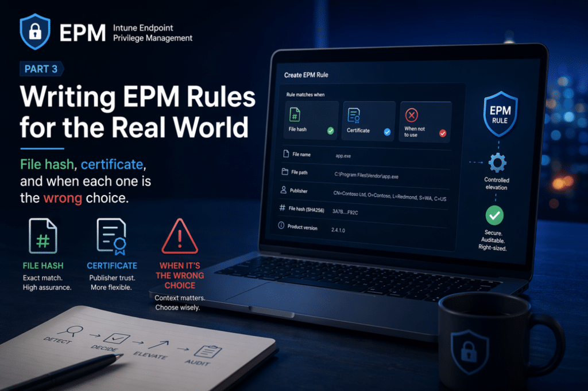
The anatomy of an elevation rule
Every elevation rule in Intune Endpoint Privilege Management has two parts:
- A detection – the set of attributes that identify which file the rule applies to
- An elevation action – what happens when a file matching that detection is run
Getting the elevation action right is mostly about persona mapping, which you have already done. Automatic for trusted, well-understood applications. User-initiated, with business justification for less frequent tasks where you want a light audit trail. Support-approved for higher-risk applications where you want a human in the loop.
Detection is where precision lives and where most mistakes happen. So that is where we will spend most of our time.
Understanding detection attributes
When you build a rule, Intune Endpoint Privilege Management lets you identify a file using a combination of attributes. The available attributes fall into two categories: strong and weak.
Strong attributes are protected by the file’s signature or are intrinsic to the file’s content. They are difficult to forge:
- File hash – a cryptographic hash of the exact binary
- Certificate/publisher signature – the code-signing certificate the file was signed with
- Signature-protected metadata – product name, internal name, and description, when these are part of the signed attributes of the file
Weak attributes are easily changed and should never be used on their own:
- File name – trivially renamed by any user
- File path – a file can be placed in, or moved to, almost any location
EPM enforces a minimum standard here: every rule must include at least one strong method of identification – either a file hash, a certificate, or both. You cannot build a rule on file name and path alone, and that restriction exists for a good reason, which we will come to.
File hash: The strictest rule YOU can build
A file hash rule matches a single, exact binary. If even one byte of the file changes, the hash changes, and the rule no longer matches.
This makes file hash the strongest and most precise detection attribute available. When you build a rule on a file hash, you have near-certainty that the file being elevated is the exact file you intended – not a renamed imposter, not a tampered version, not a different build that happens to share a name.
To get a file’s hash, you can either pull it directly from the EPM elevation reports – the hash is captured in the elevation usage report you were working with during the audit phase.
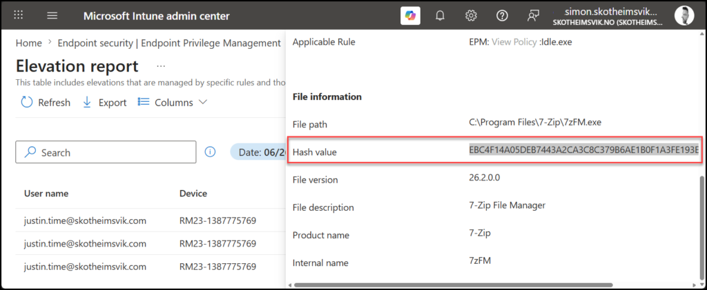
Alternatively, you can generate the hash from the binary with PowerShell on the device having the application installed:
Get-FileHash "C:\Path\To\Application.exe" | Select-Object Hash
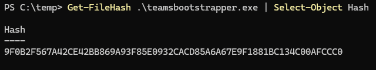
When file hash is the right choice:
- One-off elevations for a specific tool that does not update frequently
- Internal line-of-business applications and scripts where you control the release cycle and can update the rule when the binary changes
- Any situation where the absolute strongest assertion of file identity is required – high-risk applications, anything a security team has flagged
- PowerShell scripts (
.ps1) where the content is stable
Where file hash becomes the wrong choice:
Here is the trade-off, and it is the single most important thing to understand about file hash rules. A file hash is unique to one specific version of a file. Every time the application updates, the hash changes – and your rule stops matching.
For an application that updates monthly, or worse, auto-updates silently in the background, a file hash rule becomes a maintenance treadmill. The vendor ships a new version, the hash no longer matches, the user can no longer elevate, the helpdesk ticket arrives, and you are back to manually updating a rule you thought you had finished. For a tool like a browser, a development tool, or anything with a modern auto-update mechanism, a file hash alone is the wrong choice. It will generate more work than it saves.
Certificate: Strong, flexible, and easy to get wrong
A certificate rule matches files based on the code-signing certificate used to sign them. Because the certificate stays constant across version updates – the vendor signs every release with the same code-signing identity – a certificate rule survives application updates that would break a file hash rule.
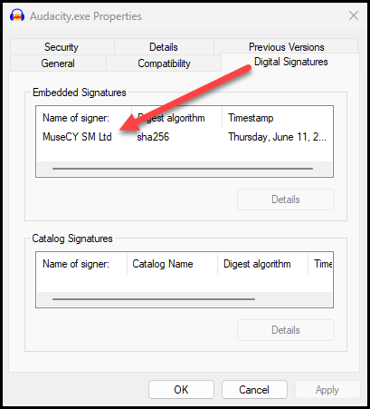
This is the great advantage of certificate rules: they are durable across updates. Build a certificate rule for a vendor’s application today, and it will continue to elevate that vendor’s signed releases tomorrow, next month, and after the next ten updates – without you touching the rule.
To export a certificate from a signed binary for use in a rule:
Get-AuthenticodeSignature "C:\Path\To\Application.exe" | Select-Object -ExpandProperty SignerCertificate | Export-Certificate -Type CERT -FilePath "C:\Temp\AppCert.cer"
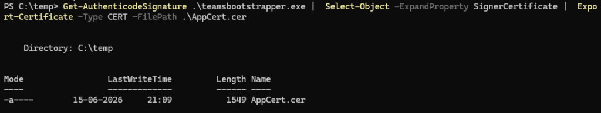
You can upload the .cer file directly to the rule, or – better – store it in a reusable settings group, which we will discuss shortly.
Here is the trap, and it is a significant one.
A certificate rule, on its own, will elevate any file signed with that certificate. Not just the application you had in mind – every application that the vendor signs with the same code-signing identity.
Many large software vendors sign their entire product portfolio with a single code-signing certificate. If you build a certificate-only rule to elevate one of their tools, you may have just authorized silent, automatic elevation of every other tool that the vendor ships – including ones you have never evaluated, and potentially ones that could be used to do far more than you intended on the endpoint.
This is why Microsoft’s guidance is explicit: certificate rules are strong, but they should be paired with other attributes. Pairing a certificate with signature-protected metadata – product name, internal name, description – drastically narrows the rule. The certificate proves the file was genuinely issued by the vendor; the metadata proves it is the specific product you intended to elevate. Together, they give you both durability across updates and precision about which file is covered.

A certificate paired with a product name is, in our experience, the sweet spot for most production rules: it survives updates, and it does not over-elevate.
Why file name and path are never enough
It is worth being explicit about why EPM refuses to let you build a rule on file name and path alone.
A file name is not part of the file’s signature. Any standard user who can write to the directory where a file resides can rename it. Picture a certificate-and-filename rule that elevates helpdesktool.exe signed by a trusted vendor. A user – or an attacker who has landed on the endpoint – renames a different, more dangerous binary from that same vendor to helpdesktool.exe, and if your rule was built loosely, it elevates.
File path has the same weakness. Unless the path is a write-protected location that standard users cannot modify, a file can be dropped into it. A rule that trusts a path is only as strict as the permissions on that path.
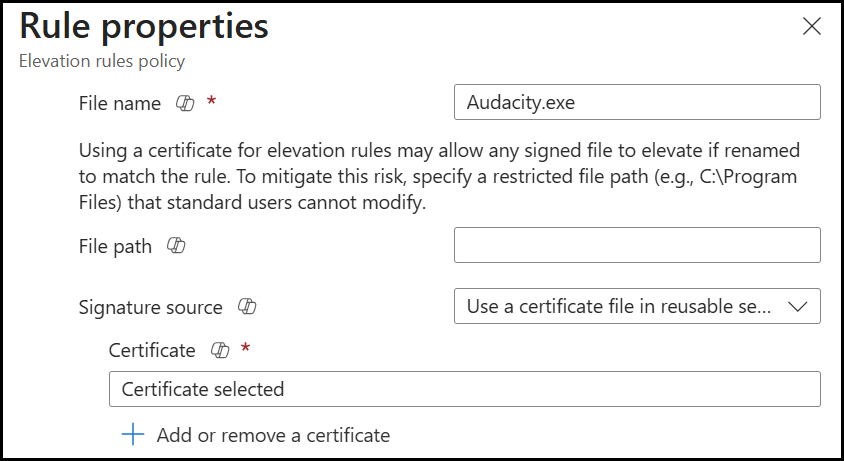
This is not theoretical hardening for its own sake. The whole point of Intune Endpoint Privilege Management is to elevate specific, intended files and nothing else. A weak detection undermines that purpose entirely.
If you find yourself wanting to build a rule on file name and path because the file is unsigned and you do not have a stable hash, that is a signal to stop and ask a different question: should this file be elevated at all, and if so, can it be properly signed first?
Child Process Behavior: The setting everyone forgets
When a process is elevated and then launches another process – a child process – Windows by default passes the elevated context down to that child. The child automatically inherits the parent’s elevated privileges.
This default behavior is exactly what you do not want in many cases. Consider an installer you have elevated. During installation, it spawns a command prompt, a script host, or a browser to display release notes. With default Windows behavior, every one of those child processes is now running with administrator rights – and a command prompt running as administrator is a powerful tool in the wrong hands.
Intune Endpoint Privilege Management lets you control this. The child process behavior setting on each rule lets you decide what happens to processes spawned by an elevated application:
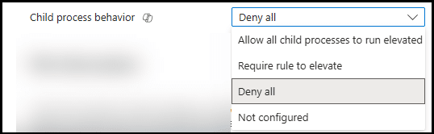
- Allow child processes to run elevated (the permissive default – Windows behavior)
- Require child processes to match their own elevation rule
- Deny elevation to child processes entirely (run them in the standard user context)
The principle of least privilege says: elevate the parent, and do not blindly hand that elevation to whatever the parent decides to launch. For most rules, you want children to either run as the standard user or to require their own rule.
One important caveat from the field: changing child process behavior away from the default can break applications that genuinely expect to launch elevated helpers. Some legitimate installers really do need to spawn an elevated child process to complete. This is why you test. Tighten the child process behavior, then verify the application still works end-to-end before you roll the rule out. If it breaks, you have learned something about how that application works – and you can build a specific child rule rather than opening the door for everything.
When Rules Collide: Conflict Resolution
As your rule set grows, and especially once you are deploying rules to both users and devices, you will eventually have more than one rule that could apply to the same file. It is important to understand how Intune Endpoint Privilege Management resolves these conflicts, because the resolution logic should inform how you structure your rules.
When a device receives multiple rules that match the same file, EPM resolves the conflict in this order:
- Rules assigned to users take precedence over rules assigned to devices. This is the most important structural decision in your deployment – decide deliberately whether your rules are user-targeted or device-targeted, because user rules win.
- Rules with a file hash are treated as the most specific and take precedence over less specific rules.
- If still unresolved, a defined precedence order applies to elevation behavior, with more restrictive behaviors generally taking precedence.
There is one absolute rule that overrides all of the above: a deny rule always wins. If a user is assigned both a rule that allows elevation of a file and a rule that denies it, the deny takes precedence, and the elevation fails. This is by design – it means you can use deny rules as a hard backstop for files you never want elevated, with confidence that no allow rule will override them.
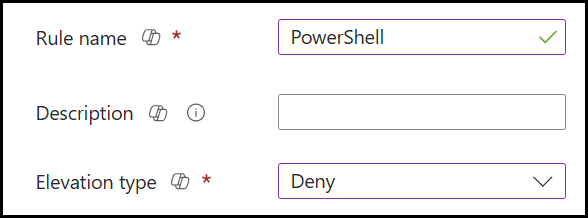
The practical takeaway: pick a primary targeting model – user-based or device-based – and stick to it for the bulk of your rules. Mixing the two without a clear reason is how you end up with elevation behavior that is hard to predict and harder to troubleshoot.
Reusable Settings Groups: Build once, use everywhere
As you build rules across multiple personas, you will find yourself using the same certificates again and again. The same vendor certificate might appear in the rules for your office workers, power users, and IT operations team.
Rather than uploading the same certificate into every rule individually, Intune Endpoint Privilege Management lets you create a reusable settings group – a centralized certificate (or set of attributes) that multiple rules reference.

The operational advantage is maintenance. When a vendor rotates their code-signing certificate – which they do, certificates expire – you update the certificate in one reusable settings group, and every rule that references it picks up the change automatically. Without reusable settings groups, a certificate rotation means hunting down and updating every individual rule that used the old certificate. With them, a single change propagates everywhere.
For any certificate you expect to use in more than one rule, use a reusable settings group from the start. Your future self, mid-certificate-rotation, will thank you.
A practical rule-building workflow
Pulling this together, here is the workflow we recommend for taking an application from your backlog to a deployed rule:
1. Gather the file’s attributes. Pull the file hash and certificate from the EPM elevation report as shown above, or run the PowerShell commands above directly against the binary.
Microsoft also provides a Get-FileAttributes cmdlet in the EPMTools PowerShell Module specifically to help build accurate detection rules – use it to see exactly what signature-protected metadata is available.
1. Import the module to access the tool for reading file attributes.
Import the module from EpmCmdlets.dll found in C:\Program Files\Microsoft EPM Agent\EpmTools. (Oh, the chicken and egg – you need privileges to import the module)
Import-Module 'C:\Program Files\Microsoft EPM Agent\EpmTools\EpmCmdlets.dll'
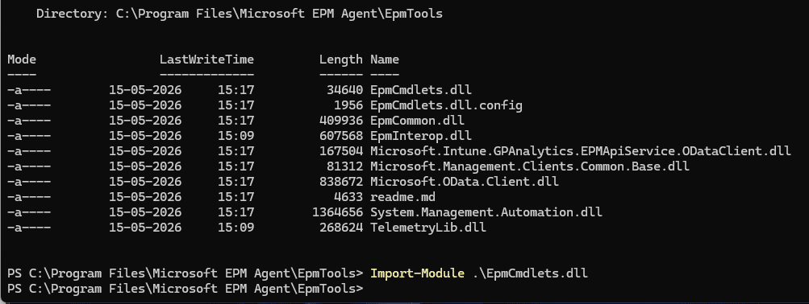
With the module imported, you are ready to get the file attributes.
Get-FileAttributes -FilePath "C:\Path\To\Application.exe"
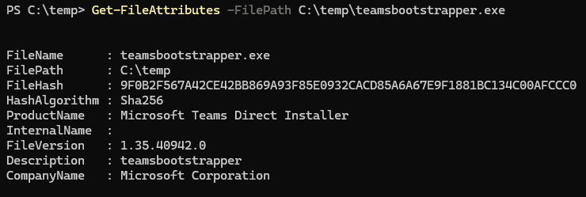
If the file has multiple certificates signed, you can easily extract them using the EPM module
Get-FileAttributes -FilePath "C:\Path\To\Application.exe" -CertOutputPath "C:\Path\To"
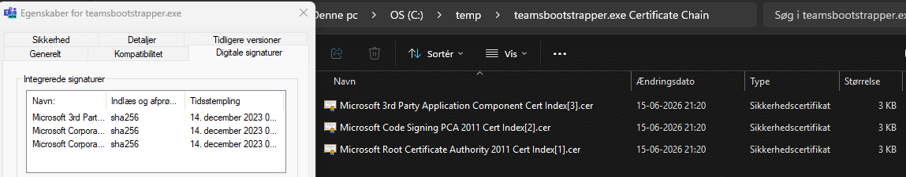
2. Choose your detection strategy based on update frequency.
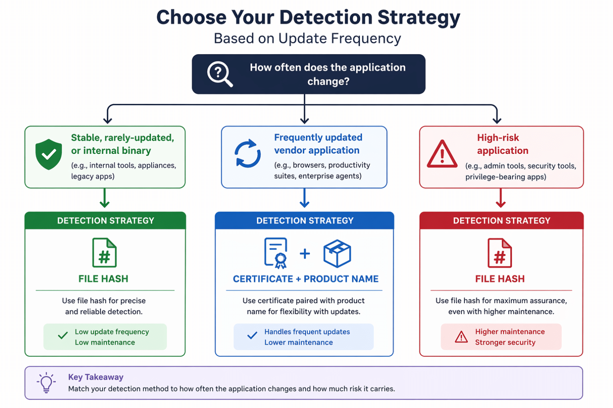
3. Set the elevation action from your persona mapping. Automatic, user-initiated, or support-approved – this was decided in the audit phase.
4. Configure child process behavior deliberately. Default to denying or requiring rules for child processes unless you have a reason not to.
5. Test on a real standard-user account. Not an admin account, a genuine standard user, because, as covered in Post 1 and Post 2, an admin test account hides the virtual account behavior and several other issues. Verify the application elevates, runs correctly after elevation, including after a restart.
6. Deploy to a single persona group first. Start with your lowest-risk persona. Watch the elevation reports. Confirm the rule is matching what you expect and nothing else.
7. Expand. Once validated, widen the assignment to the remaining personas that need it.
Worked example: Building rules for the Power User Persona
Theory is easier to absorb when it is tied to something concrete, so let us walk through building a rule set for a single persona end-to-end. We will use the Power User persona, the cohort that elevates regularly for a consistent, predictable set of specialist applications. It is a good example because it naturally exercises several of the decisions covered above: different detection strategies for different applications, and different elevation actions depending on risk.
From the audit data in Post 2, suppose the Power User persona surfaced three applications that account for the bulk of their elevations:
|
Application |
Behavior observed in the audit |
Update frequency |
Signing |
|---|---|---|---|
|
A financial modeling tool |
Run weekly, installs add-ins that require elevation |
Quarterly vendor releases |
Signed by vendor, single product |
|
An internal reporting utility |
Run monthly, written in-house |
Rare, controlled by us |
Unsigned internal binary |
|
A vendor diagnostic tool |
Run occasionally, broad capability on the device |
Updates silently |
Signed by a large vendor who signs their whole portfolio with one certificate |
Three applications, three different correct answers. Here is how each rule gets built.
Rule 1 – The financial modeling tool
This vendor application updates quarterly and is signed with a certificate specific to that product. A file hash would work, but would break on every quarterly release, creating a maintenance task four times a year.
Detection: Certificate paired with the product name from the signed metadata. This survives the quarterly updates because the certificate remains constant, and the product-name pairing ensures that only this specific product is elevated, not any other product the vendor might sign.
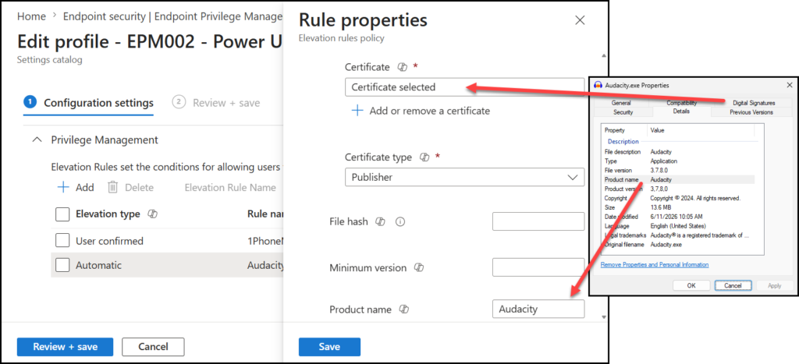
Elevation action: Automatic. The audit data shows this is run weekly by a known cohort for legitimate, well-understood work. Forcing a justification prompt every week would add friction without adding meaningful security.
Child process behavior: Deny / require own rule. The modeling tool itself needs elevation to install its add-ins; there is no reason for any process it spawns to inherit administrator rights.
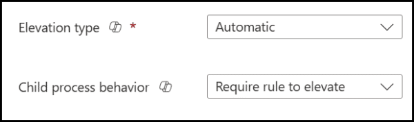
Reusable settings group: The vendor certificate belongs in a reusable settings group because the same vendor certificate may appear in other rules, and a future certificate rotation should be a single change.
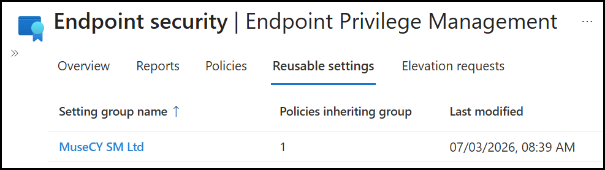
Rule 2 – The Internal Reporting Utility
This is an unsigned, in-house binary whose release cycle we control completely. There is no vendor certificate to lean on. An example of an unsigned in-house binary can be the MSEndpointMgr 1PhoneMirror tool.
Detection: File hash. Because we control when this binary changes, the maintenance burden of updating the hash on release is acceptable and predictable. It is part of our own release process, not at the mercy of a vendor’s update schedule. A file hash provides the strongest possible assertion that the exact intended binary is the one being elevated.
A note worth flagging: an unsigned internal tool that needs elevation is also a prompt for a longer-term conversation. Code-signing internal applications is good practice and would let us move this rule to a more maintainable certificate-based model in future. For now, file hash is the right pragmatic choice, but the unsigned status is a flag, not something to ignore.
Elevation action: User-initiated with business justification. Run monthly, at lower volume, with a light audit trail as appropriate.
Child process behavior: Deny.
The first step in creating this policy is to obtain the executable’s hash.
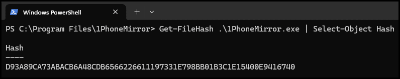
We can now create the profile for this specific file as a user-confirmed elevation type that requires a business justification and denies all child processes.
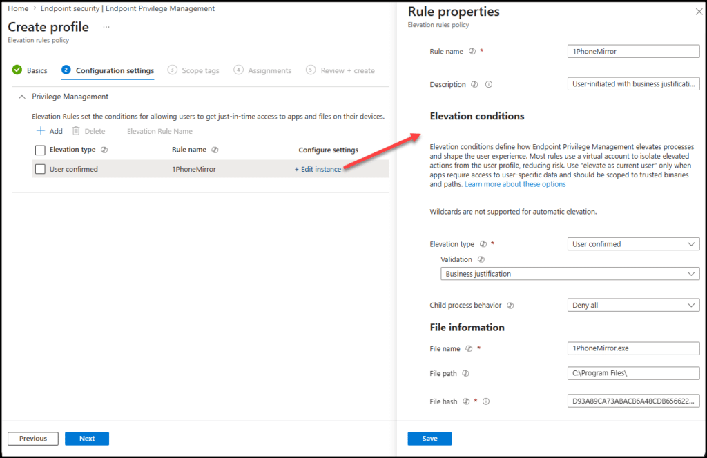
Rule 3 – The Vendor Diagnostic Tool
This is the dangerous one, and the audit data flagged it: a tool with broad capabilities on the device, signed by a large vendor that uses a single code-signing certificate across its entire product catalog.
A certificate-only rule here would be a serious mistake – it would silently authorize elevation of every application that the vendor signs, most of which have never been evaluated.
Detection: Certificate paired with product name and a file hash. This is the most restrictive combination available – the certificate and product name narrow it to this specific product, and the file hash pins it to the exact version. Yes, the hash means this rule needs to be updated when the tool updates. For a high-capability tool, that maintenance cost is a feature, not a bug: it forces a deliberate review each time the binary changes.
Elevation action: Support-approved. Given the tool’s broad capability, a human in the loop is warranted. The user requests elevation with justification, and an administrator approves it through the Intune admin center before it proceeds.
Child process behavior: Deny.
As an example, we will look at SysInternals Autoruns signed by Microsoft. By investigating the EXE file, we can see the certificate used to sign the application.
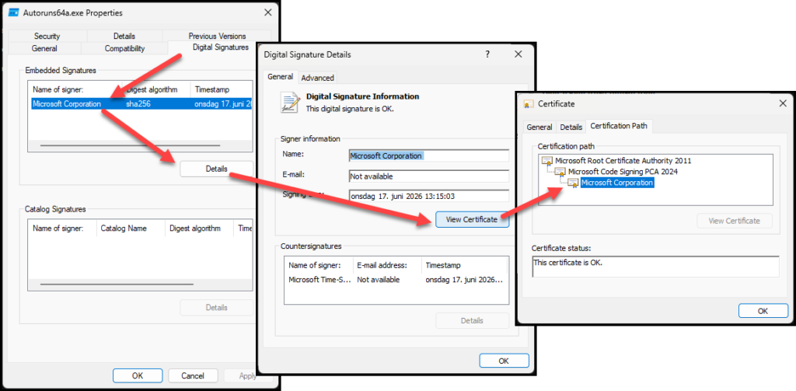
Using Get-Fileattributes, I get both the hash and the certificate I need to build the rule.
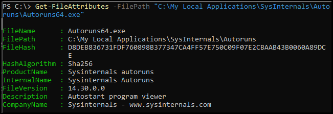
The certificate will now be added as an EPM reusable setting.
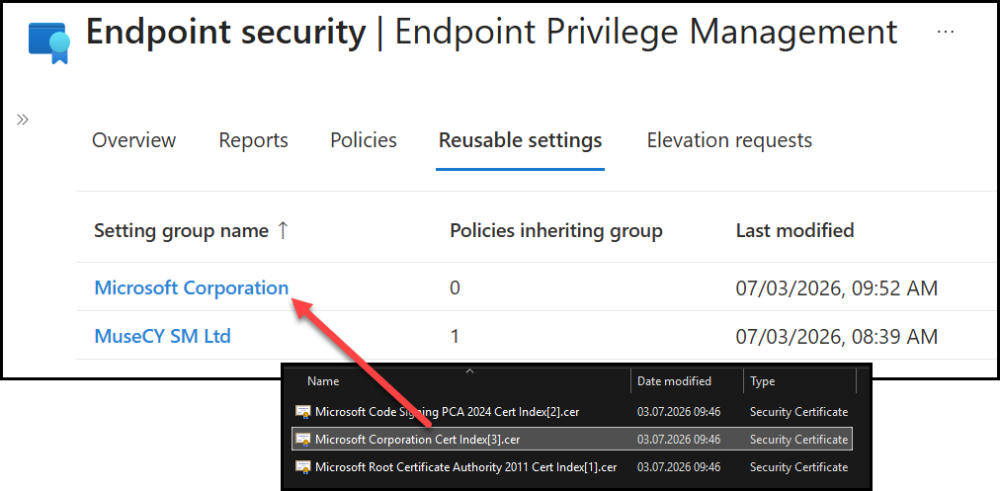
The EPM elevation rule policy can now be configured as a support-approved policy (1) denying all child processes (2) where the detection is using the file name (3), a certificate (4), and the file hash (5).
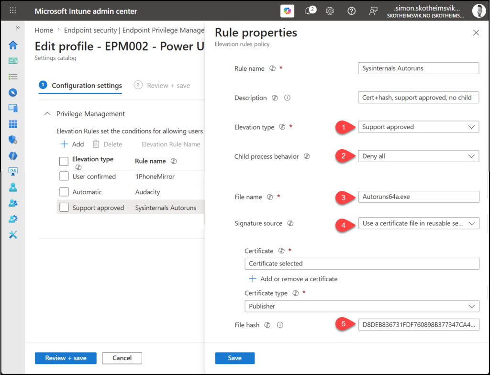
This policy will now explicitly target only the intended application signed by Microsoft.
The Persona rule set, assembled
Pulling the three together, the Power User Elevation Rules Policy looks like this:
|
Rule |
Detection |
Elevation action |
Child processes |
|---|---|---|---|
|
Financial modeling tool |
Certificate + product name (reusable group) |
Automatic |
Deny/require rule |
|
Internal reporting utility |
File hash |
User-initiated + justification |
Deny |
|
Vendor diagnostic tool |
Certificate + product name + file hash |
Support-approved |
Deny |
This single policy is then assigned to the Power User persona group – and only that group. Three applications, three detection strategies, three elevation actions, each chosen deliberately from the application’s real-world behavior rather than a one-size-fits-all default. That is what a well-built persona rule set looks like.
It is important to maintain strict control over the membership of the EPM Persona groups. Users assigned to these groups are granted additional privileges through Endpoint Privilege Management, allowing them to run approved processes with elevated rights. As a result, group membership should be tightly governed and regularly reviewed to prevent unintended privilege escalation.
Consider creating these groups as role-assignable groups in Microsoft Entra ID by enabling the “Microsoft Entra roles can be assigned to the group” option. Alternatively, protect them through Administrative Units to delegate and restrict management to a controlled set of administrators.
Assigning the policy to your Power Users
Building the rules is only half the job; a policy that is not assigned does nothing. This is also where the conflict-resolution logic from earlier becomes a practical decision rather than a theoretical one.
First, you need a group that actually represents this persona. The persona was a data-driven grouping you identified from the audit reports – now it has to become a real, targetable group. In practice, this means creating an Entra ID group, for example, EPM - Persona - Power Users, and populating it with the users (or their devices) who matched that elevation profile during the audit phase. Dynamic group membership rules can help here if your power users share an attribute such as department or job title, but for most organizations, a curated, reviewed membership list is more reliable to start with; you do not want elevation rules silently applying to people who drifted into a dynamic group by accident.
Then comes the targeting decision: assign to users, or assign to devices?
Recall the conflict-resolution logic: rules assigned to users take precedence over rules assigned to devices. For a persona like power users, user-based assignment is usually the right choice. The elevation needs to follow the person, not the hardware. A financial analyst should be able to elevate their modeling tool, whether on their primary workstation or a replacement laptop, without having to re-target the device. User assignment delivers that naturally.
Device-based assignment makes more sense in specific cases like shared devices, kiosks, or scenarios where the elevation need is tied to the machine’s role rather than to whoever is signed in. For a knowledge-worker persona like this one, those cases are the exception.
Whichever you choose, the earlier guidance holds: pick a primary targeting model and apply it consistently across your personas. Mixing user and device targeting without a clear rationale is what makes elevated behavior unpredictable.
In the Intune admin center, open the Power User Elevation Rules Policy, go to the Assignments tab, and add EPM - Persona - Power Users under Included groups. Save. Once the targeted users’ devices check in and receive the policy, the three rules become active for that cohort and nobody else.
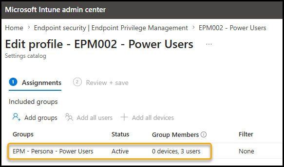
One more deliberate step before you consider this persona done: start narrow. Even within the power user group, assign the policy to a small pilot subset first, a handful of cooperative users who will tell you if something does not work. Confirm that the rules behave as intended using the reports (which we turn to next), and only then expand the assignment to the full persona group.
Closing the loop: Reading the managed vs. unmanaged reports
Building the rules is not the end of the workflow – verifying they behave as intended is. This is where you return to the same reports you used in the audit phase, but now you are reading them with a different question in mind: are my rules actually catching what I built them to catch?
Intune Endpoint Privilege Management splits elevation reporting into two categories, and the relationship between them is the single most useful signal in the entire deployment:
Managed elevations are elevations that happened through an EPM rule. After deploying the Power User policy, the financial modeling tool, the reporting utility, and the diagnostic tool should all begin appearing here for that persona. A managed elevation is a success – it means a user performed a privileged action, and your policy governed it.
Unmanaged elevations are elevations that happened outside of EPM – through the standard Windows path, by a user who still holds local admin rights. During the audit phase, almost everything was unmanaged. That was expected.
Here is how to read the two together as you roll out:
Immediately after deploying a persona’s rules, watch for the persona’s key applications to move from the unmanaged column to the managed column. This is your confirmation that the rules match. If the financial modeling tool still appears as an unmanaged elevation for a Power User after the policy is applied, something is wrong with the rule. The detection attributes do not match the binary in the field, or the policy has not yet reached the device.
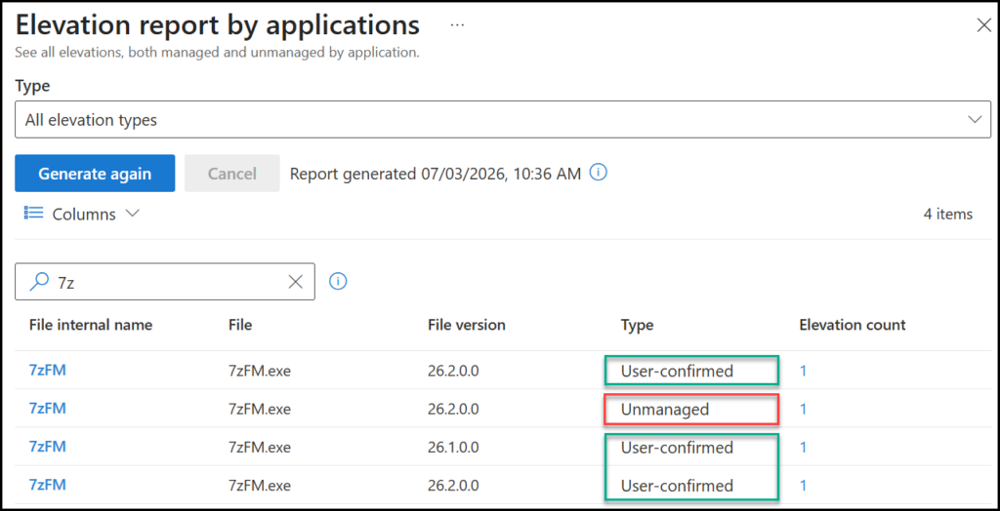
As you progress toward removing local admin rights, the goal is for the managed elevation count to rise and the unmanaged count for that persona to fall toward zero. A persona that still shows significant unmanaged elevation volume is not ready to have local admin rights removed – those unmanaged elevations represent privileged actions that have no rule yet. Removing admin rights from that persona would turn every one of those into a blocked action and a helpdesk call.
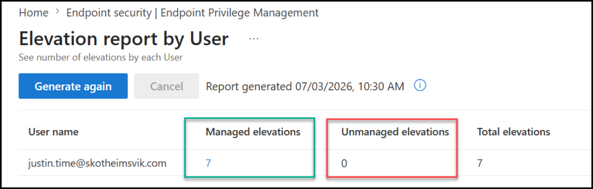
The unmanaged report is also your ongoing discovery tool. Even after a persona is well covered, new unmanaged elevations will occasionally appear – a new tool someone started using, an application that updated and changed its behavior. Treat the unmanaged report as a running backlog of rule candidates. Reviewing it periodically is part of the operational hygiene that keeps the deployment healthy over time.
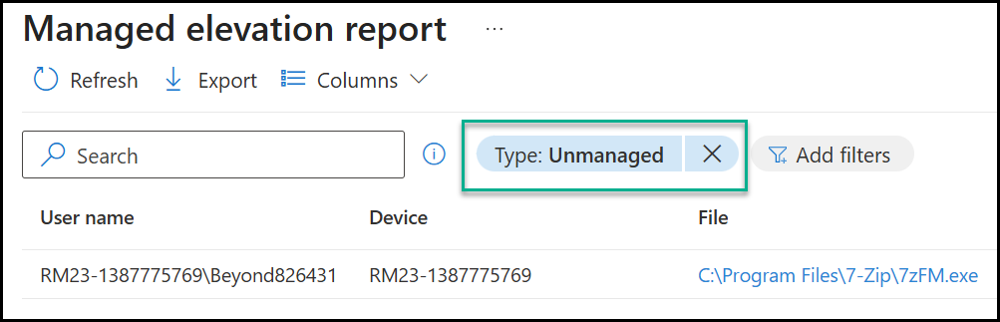
The reports turn rule-building from a one-time configuration task into a feedback loop. You build a rule, watch it move an application from unmanaged to managed, and confirm that the count of unmanaged elevations for that persona is trending toward zero. When it reaches zero (it may never do, but you get the point), that persona is ready for the next phase, and that next phase, removing local admin rights, is where the real payoff of everything so far finally lands.
With EPM, you have the license to kill local admin!
– Simon
Two known issues worth knowing before you build
Two environmental factors can stop EPM rules from working, regardless of how well you build them. Both are easy to miss and worth checking before you spend a day troubleshooting a rule that was never going to work.
Windows Administrator Protection. At the time of writing, Administrator Protection does not support elevations initiated from Intune Endpoint Privilege Management. If you enable Administrator Protection on devices where standard users rely on EPM for elevation, the elevation fails. Microsoft has stated this is being worked on, but for now, the two features are mutually exclusive on the same device. Check this before you deploy.
App Control for Business (formerly WDAC). If you run App Control for Business, your policy must explicitly account for the EPM client components. EPM is not included in the default App Control policies, so a policy that blocks the EPM agent’s components can prevent EPM from functioning entirely. If you use application control, build the EPM components into your allow rules before you roll out EPM.
Both of these belong on your pre-deployment checklist. They are exactly the kind of thing that turns into a half-day of confused troubleshooting if you discover them after the fact – and we will go much deeper into troubleshooting in a later post in this series.
Closing: Precision is a discipline, not a setting
There is no single correct way to build every rule. File hash and certificate each have a place, and the right choice depends on the application in front of you – how often it updates, how it is signed, how much risk it carries, and which persona needs it.
But the underlying discipline is consistent. Identify files as precisely as the situation allows. Never rely on a weak attribute alone. Control what an elevated process is allowed to spawn. Test on a real standard user before you trust a rule. And structure your assignments so that conflict resolution works for you rather than surprising you.
Do that, and your rule set becomes an asset – a precise, durable, auditable definition of exactly what your organization permits to be elevated, and nothing more. That is the goal. That is what taking back the endpoint actually looks like in practice.
With your rules built and validated, you are finally ready to do the thing this whole series has been building toward: start removing local admin rights.
In the next post, we turn to the user persona that makes it hardest, the developer, and the architectural decisions that come with it.
FAQ
What are the two parts of an Endpoint Privilege Management (EPM) rule?
An EPM rule consists of:
A detection (how the file is identified)
An elevation action (what happens when the file runs)
What makes a strong detection attribute in EPM rules?
Strong attributes are difficult to forge and tied to the file itself, such as:
– File hash
– Certificate (publisher signature)
– Signature-protected metadata like product name
Weak attributes like file name and path should not be used alone.
Why can’t I build an EPM rule using only the file name and the file path?
Because both the file name and the path are easily changed by users or attackers, they are unreliable for securely identifying a file.
What is the main advantage of using a file hash in EPM rules?
A file hash provides maximum precision, ensuring the rule only matches the exact binary intended—even a single change breaks the match.
When does a file hash become the wrong choice?
File hash is the wrong choice when:
– The application updates frequently
– The hash changes constantly
– Maintaining the rule becomes a manual, ongoing task
What is the main advantage of certificate-based rules?
Certificate rules are durable across updates, since the same certificate is used to sign new versions of the application.
What is the biggest risk of using certificate-only rules?
A certificate-only rule can elevate every application signed by that certificate, not just the one you intended.
How do you safely use certificate-based detection in EPM?
By combining the certificate with signature-protected metadata (such as the product name), the rule can be narrowed to a specific application.
What is the purpose of the child process behavior setting in EPM?
It controls whether processes launched by an elevated application:
– Inherit elevation
– Require their own rule
– Or run as a standard user
This helps prevent unintended privilege escalation.
How should you choose between a file hash and a certificate in EPM rules?
The choice depends on:
– Update frequency of the application
– Risk level of the tool
– Who needs the elevation (persona)
In practice, different applications require different detection strategies rather than a one-size-fits-all approach.
What happens if a deny rule conflicts with an allow rule in EPM?
A deny rule always takes precedence over any allow rule.
If both exist for the same file, the deny rule wins and the elevation is blocked—by design, so you can use deny rules as a hard safety backstop that cannot be overridden.
Can Intune Endpoint Privilege Management elevate unsigned applications?
Yes. Unsigned applications can be elevated using file hash-based rules. However, because unsigned files cannot be identified using publisher certificates, hash-based detection is usually required and introduces additional maintenance whenever the application changes.
Should EPM elevation rules be assigned to users or devices?
It depends on the scenario. User assignment is often preferred for persona-based deployments because elevation follows the user across devices. Device assignment is typically better suited for shared devices, kiosks, or scenarios where elevation requirements are tied to the device rather than the individual.
Why should EPM Persona groups be governed carefully?
Membership in EPM Persona groups determines which users are allowed to execute approved applications with elevated privileges. These groups should therefore be treated as security-sensitive groups, with controlled ownership, periodic reviews, and appropriate administrative protections.